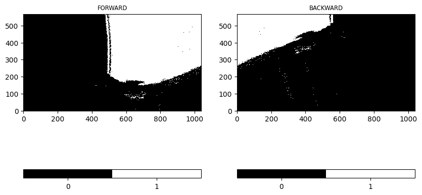
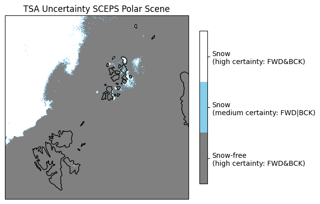
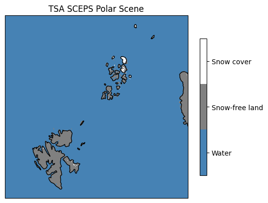
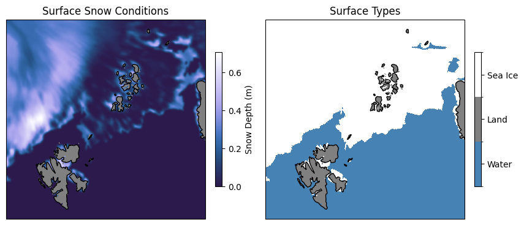
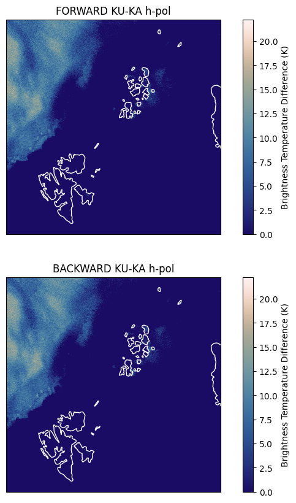

CIMR L2 TSA Algorithm for the SCEPS Polar Scene#
Show code cell content
import os
import sys
import numpy as np
import xarray as xr
import pyresample as pr
import importlib
import matplotlib as mpl
from matplotlib import pyplot as plt
from matplotlib import colors
from cartopy import crs as ccrs
import cmcrameri.cm as cmc
# local imports
if '/tools/' not in sys.path:
sys.path.insert(0, os.path.abspath('../.../') + 'algorithm/tools/')
import l2_format as l2
import TSA_algorithm as algorithm
import l2_tools as tools
---------------------------------------------------------------------------
ModuleNotFoundError Traceback (most recent call last)
Cell In[1], line 11
9 from matplotlib import colors
10 from cartopy import crs as ccrs
---> 11 import cmcrameri.cm as cmc
13 # local imports
14 if '/tools/' not in sys.path:
ModuleNotFoundError: No module named 'cmcrameri'
Show code cell source
# reload local imports
importlib.reload(l2)
importlib.reload(algorithm)
importlib.reload(tools)
algo = 'Pulliainen2010'
algo_version = '0.9.0'
l1x_scenes = ('devalgo_geometric', 'devalgo_radiometric', 'sceps_polar1')
l2_grids = ('ease2-3.125km-nh','ease2-1.0km-testcard')
test_card_name = l1x_scenes[2]
l2_grid = l2_grids[1] # SCEPS scene grid
if test_card_name == 'sceps_polar1':
# SCEPS test card
l1x_path = os.path.abspath('../../../..../') + 'Data/SCEPS/'
l1x_fn = 'SCEPS_l1x@KA_sceps_geo_polar_scene_1_unfiltered_tot_minimal_nom_nedt_apc_tot_v2p1.nc'
Step 1: Dry Snow Detection#
# read L1X data
data_fwd,geo_fwd,data_bck,geo_bck = tools.read_l1x(l1x_path + l1x_fn)
# detection forward and backward
TSA_fwd = algorithm.dry_snow_detection(data_fwd,tsa_algorithm=algo)
TSA_bck = algorithm.dry_snow_detection(data_bck,tsa_algorithm=algo)
Show code cell source
cmap = colors.ListedColormap(['black', 'white'])
vrange=[0,.5,1]
# cmap.set_bad(color='red')
fig, ax = plt.subplots(nrows=1, ncols=2, sharex=True, sharey=False, figsize=(10,10))
img = ax[0].imshow(TSA_fwd, vmin=0, vmax=1, interpolation='none', origin='lower', cmap=cmap)
ax[0].set_title('FORWARD', fontsize='small')
# plt.text(0.01,0.99,'TSA',va='top',color='white')
cbar = plt.colorbar(img, boundaries=vrange, ticks=[0.25, 0.75], orientation='horizontal')
cbar.ax.set_xticklabels(['0', '1'])
img = ax[1].imshow(TSA_bck, vmin=0, vmax=1, interpolation='none', origin='lower', cmap=cmap)
ax[1].set_title('BACKWARD', fontsize='small')
# plt.text(0.01,0.99,'TSA',va='top',color='white')
cbar = plt.colorbar(img, boundaries=vrange, ticks=[0.25, 0.75], orientation='horizontal')
cbar.ax.set_xticklabels(['0', '1'])
# fig.savefig('tsa_swath.png', format='png', dpi=1200, bbox_inches='tight')
plt.show()

Step 2: Combined Reprojection#
area_def = pr.load_area('ease2_adef.yaml',l2_grid)
cart_crs = area_def.to_cartopy_crs()
# extent = cart_crs.bounds
trg_lon, trg_lat = area_def.get_lonlats()
Step 2.1: Individual Reprojection#
TSA_fwd_proj = tools.reproject_to_grid(TSA_fwd,geo_fwd,area_def=area_def)
TSA_bck_proj = tools.reproject_to_grid(TSA_bck,geo_bck,area_def=area_def)
Step 2.2: Combining Reprojections#
# intermediate combined data
TSA_comb, TSA_comb_uncert = tools.combine_proj(TSA_fwd_proj,TSA_bck_proj)
Show code cell source
cmap = colors.ListedColormap(['grey', 'skyblue', 'white'])
vrange=[-0.25,0.25,0.75,1.25]
norm = colors.BoundaryNorm(vrange, cmap.N)
ax = plt.axes(projection=ccrs.LambertAzimuthalEqualArea(central_latitude=+90.0))
img = ax.pcolormesh(trg_lon, trg_lat, TSA_comb_uncert, transform=ccrs.PlateCarree(), cmap=cmap)
ax.set_title('TSA Uncertainty SCEPS Polar Scene')
cbar = plt.colorbar(img, cmap=cmap, norm=norm, boundaries=vrange, ticks=[0,0.5,1], fraction=0.031, pad=0.046)
cbar.ax.set_yticklabels(['Snow-free\n(high certainty: FWD&BCK)', 'Snow\n(medium certainty: FWD|BCK)', 'Snow\n(high certainty: FWD&BCK)'])
ax.coastlines()
plt.show()

Step 3: Masking and Flagging#
# load surface information
dem_ref_scenario = os.path.abspath('../../../..../') + 'Data/SCEPS/cimr_sceps_geo_card_devalgo_polarscene_1_20161217_harmonised_v2p0_surface.nc'
data_tc = xr.open_dataset(dem_ref_scenario)
swath_def = pr.geometry.SwathDefinition(lons=data_tc['longitude'].values[0,:,:], lats=data_tc['latitude'].values[0,:,:])
land_mask = pr.kd_tree.resample_nearest(swath_def, np.float64(data_tc['land_sea_ice_mask'].values[0,:,:]), area_def,
radius_of_influence=20000/4, fill_value=np.nan)
# data_tc.close()
# prepare land_mask
land_mask[(land_mask == 1) | (land_mask == 9)] = 0 # set water (incl. sea water)
land_mask[land_mask == 2] = 1 # set land
# status_flag
TSA_status_flag = np.zeros(TSA_comb.shape, dtype='i8')
TSA_status_flag[TSA_status_flag == 0] = 8 # 8: no data, out of grid
TSA_status_flag[land_mask == 0] = 0 # 0: water
TSA_status_flag[(TSA_comb == 0) & (land_mask == 1)] = 1 # 1: land
TSA_status_flag[(TSA_comb == 1) & (land_mask == 1)] = 2 # 2: valid snow
# TSA_status_flag[] = 3 # 3: [placeholder]
status_flag_comment = '0: water; 1: land; 2: snow (valid); 3-7: [placeholders]; 8: no data, out of grid.'
Show code cell source
cmap = colors.ListedColormap(['steelblue', 'grey', 'white'])
vrange=[-0.5,0.5,1.5,2.5]
norm = colors.BoundaryNorm(vrange, cmap.N)
ax = plt.axes(projection=ccrs.LambertAzimuthalEqualArea(central_latitude=+90.0))
img = ax.pcolormesh(trg_lon, trg_lat, TSA_status_flag, transform=ccrs.PlateCarree(), cmap=cmap)
ax.set_title('TSA SCEPS Polar Scene')
cbar = plt.colorbar(img, cmap=cmap, norm=norm, boundaries=vrange, ticks=[0,1,2], orientation='vertical', pad=0.05, shrink=0.75)
cbar.ax.set_yticklabels(['Water', 'Snow-free land', 'Snow cover'])
ax.coastlines()
plt.show()

Visualization of Scene Snow Conditions#
Over land, no specific snow conditions are given.
Show code cell source
fig, ax = plt.subplots(nrows=1, ncols=2, sharex=True, sharey=True, figsize=(10,10),
subplot_kw=dict(projection=cart_crs))
cmap = cmc.devon
cmap.set_bad(color='grey')
img = ax[0].pcolormesh(data_tc['longitude'].values[0,:,:], data_tc['latitude'].values[0,:,:], data_tc['snow_thickness'].values[0,:,:], transform=ccrs.PlateCarree(), cmap=cmap)
ax[0].coastlines(color='black')
ax[0].set_title('Surface Snow Conditions')
cbar = plt.colorbar(img, cmap=cmap, fraction=0.031, pad=0.046)
cbar.set_label('Snow Depth (m)')
cmap = colors.ListedColormap(['steelblue', 'grey', 'white'])
vrange=[0.5,1.5,2.5,9.5]
norm = colors.BoundaryNorm(vrange, cmap.N)
img = ax[1].pcolormesh(data_tc['longitude'].values[0,:,:], data_tc['latitude'].values[0,:,:], data_tc['land_sea_ice_mask'].values[0,:,:], transform=ccrs.PlateCarree(), cmap=cmap, norm=norm)
ax[1].coastlines(color='black')
ax[1].set_title('Surface Types')
cbar = plt.colorbar(img, cmap=cmap, norm=norm, boundaries=vrange, ticks=[1,2,6], fraction=0.031, pad=0.046)
cbar.ax.set_yticklabels(['Water', 'Land', 'Sea Ice'])
plt.show()

Demonstration of main criterium for dry snow presence, i.e. brightness temperature difference of KU-KA (h-pol)
# TB reprojection
TB_KUh_fwdproj = tools.reproject_to_grid(data_fwd['KU'].brightness_temperature_h.values,geo_fwd,area_def=area_def)
TB_KAh_fwdproj = tools.reproject_to_grid(data_fwd['KA'].brightness_temperature_h.values,geo_fwd,area_def=area_def)
TB_KAv_fwdproj = tools.reproject_to_grid(data_fwd['KA'].brightness_temperature_v.values,geo_fwd,area_def=area_def)
TB_KUh_bckproj = tools.reproject_to_grid(data_bck['KU'].brightness_temperature_h.values,geo_bck,area_def=area_def)
TB_KAh_bckproj = tools.reproject_to_grid(data_bck['KA'].brightness_temperature_h.values,geo_bck,area_def=area_def)
TB_KAv_bckproj = tools.reproject_to_grid(data_bck['KA'].brightness_temperature_v.values,geo_bck,area_def=area_def)
# TB difference
diff_h_fwdproj = TB_KUh_fwdproj-TB_KAh_fwdproj
diff_h_fwdproj[diff_h_fwdproj < 0] = 0
diff_h_bckproj = TB_KUh_bckproj-TB_KAh_bckproj
diff_h_bckproj[diff_h_bckproj < 0] = 0
Show code cell source
cmap = cmc.lapaz
norm = mpl.colors.Normalize(vmin = np.nanmin(0), vmax = np.nanmax([diff_h_fwdproj, diff_h_bckproj]))
cart_crs = area_def.to_cartopy_crs()
fig, ax = plt.subplots(nrows=2, ncols=1, sharex=True, sharey=True, figsize=(10,10),
subplot_kw=dict(projection=cart_crs))
img = ax[0].pcolormesh(trg_lon, trg_lat, diff_h_fwdproj, transform=ccrs.PlateCarree(), cmap=cmap, norm=norm)
ax[0].coastlines(color='white')
ax[0].set_title('FORWARD KU-KA h-pol')
cbar = plt.colorbar(img, cmap=cmap, norm=norm, fraction=0.031, pad=0.046)
cbar.set_label('Brightness Temperature Difference (K)')
img = ax[1].pcolormesh(trg_lon, trg_lat, diff_h_bckproj, transform=ccrs.PlateCarree(), cmap=cmap, norm=norm)
ax[1].coastlines(color='white')
ax[1].set_title('BACKWARD KU-KA h-pol')
cbar = plt.colorbar(img, cmap=cmap, norm=norm, fraction=0.031, pad=0.046)
cbar.set_label('Brightness Temperature Difference (K)')
plt.show()
